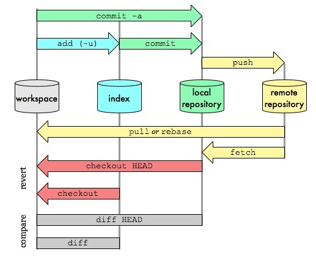

一、概述
先用一幅图，从总体上描述主要git命令的工作流程

- workspace: 本地的工作目录。（记作A）
- index：缓存区域，临时保存本地改动。（记作B）
- local repository: 本地仓库，只想最后一次提交HEAD。（记作C）
- remote repository：远程仓库。（记作D）
二、命令笔记
以下所有的命令的功能说明，都采用上述的标记的A、B、C、D的方式来阐述。
初始化
git init//创建git clone /path/to/repository//检出git config --global user.email "you@example.com"//配置emailgit config --global user.name "Name"//配置用户名
操作
git add <file>// 文件添加，A → Bgit add .// 所有文件添加，A → Bgit commit -m "代码提交信息"//文件提交，B → Cgit commit --amend//与上次commit合并, *B → Cgit push origin master//推送至master分支, C → Dgit pull//更新本地仓库至最新改动， D → Agit fetch//抓取远程仓库更新， D → Cgit log//查看提交记录git status//查看修改状态git diff//查看详细修改内容git show//显示某次提交的内容
撤销操作
git reset <file>//某个文件索引会回滚到最后一次提交， C → Bgit reset//索引会回滚到最后一次提交， C → Bgit reset --hard// 索引会回滚到最后一次提交， C → B → Agit checkout// 从index复制到workspace， B → Agit checkout -- files// 文件从index复制到workspace， B → Agit checkout HEAD -- files// 文件从local repository复制到workspace， C → A
分支相关
git checkout -b branch_name//创建名叫“branch_name”的分支，并切换过去git checkout master//切换回主分支git branch -d branch_name// 删除名叫“branch_name”的分支git push origin branch_name//推送分支到远端仓库git merge branch_name// 合并分支branch_name到当前分支(如master)git rebase//衍合，线性化的自动， D → A
冲突处理
git diff//对比workspace与indexgit diff HEAD//对于workspace与最后一次commitgit diff <source_branch> <target_branch>//对比差异git add <filename>//修改完冲突，需要add以标记合并成功
其他
gitk//开灯图形化gitgit config color.ui true//彩色的 git 输出git config format.pretty oneline//显示历史记录时，每个提交的信息只显示一行git add -i//交互式添加文件到暂存区
如果想更深入地了解git用法，可参考：